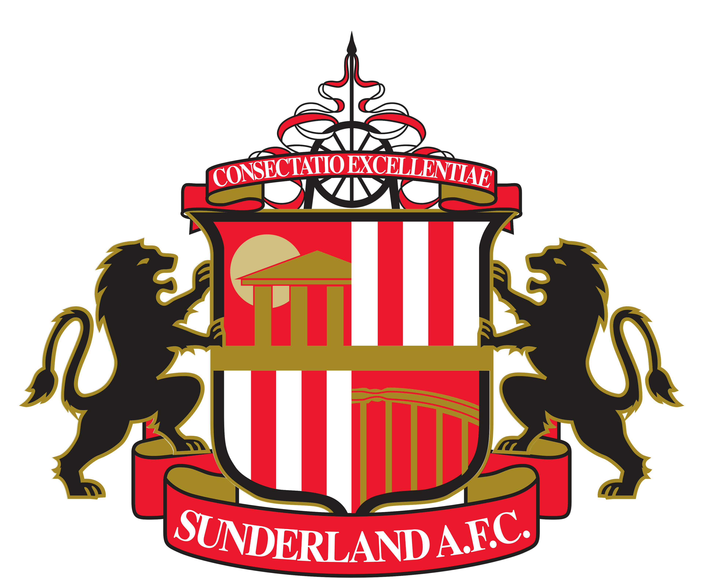
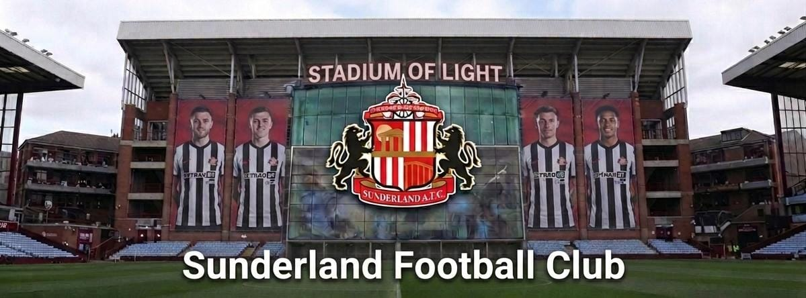
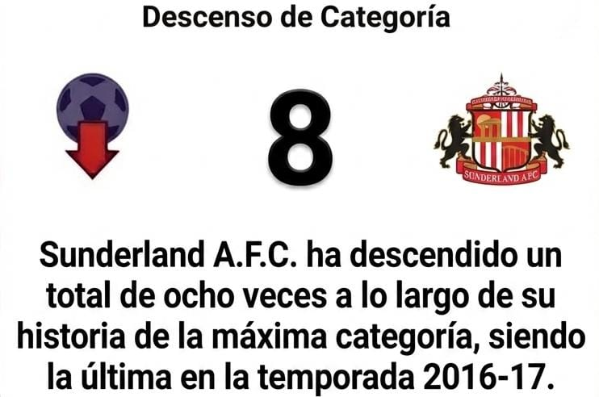
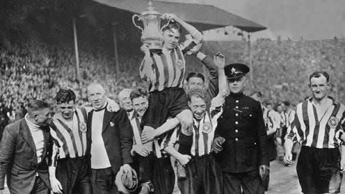
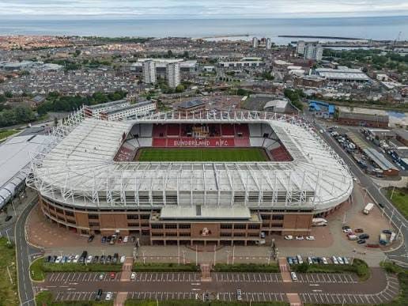

Sunderland


Titulos de Liga
6

FA Cup
2

EFL Cup
0

Community Shield
1

Títulos internacionales
0

Títulos totales
16


Fundación: El Sunderland AFC fue fundado el 17 de octubre de 1879 por el maestro James Allan. Originalmente se llamó Sunderland and District Teachers' Association Football Club antes de acortar su nombre un año después

Estadio: Stadium of Light, tiene una capacidad oficial de 48.707 espectadores (redondeada comúnmente a 49.000 asientos)